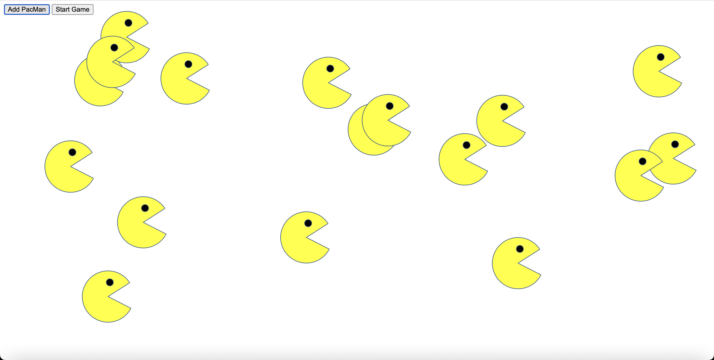

PacMen Game
Check it out by pressing on "Click Here".

Project's Overview
In this Pacmen project, I was able to expand my knowledge and softskills
when creating a pacman image. Using the DOM library and Node.js, each pacman was able to move in random directions
where it can be used according to speed.
How to Run:
- Start by creating a pacman on the top left hand corner by clicking on "Add Pacman" button
- Once pacman is created, you can click "Start Game" button to move and increase the speed of the pacman's motion.
- In addition, you can create as many pacmen you like and click, "Start Game" to move them around in different directions.
Some extra features can be improved in a way when a pacman is created and the game started. Originally the pacman will begin to move and bounce back when it gets to the edge of the webpage. There we can implement pacman's face to turn the opposite way.